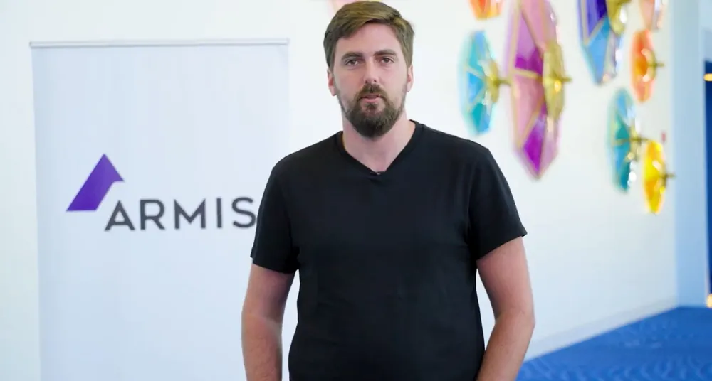

10 notícias de tecnologia para você começar o dia (10/10)
Nova série do criador de Breaking Bad: confira os primeiros detalhes.
Logins da Polícia Militar do RJ são vendidos por R$ 12.
PS Plus Extra de outubro terá grande jogo de super-herói; veja lista vazada!
WhatsApp libera função de Canais para mais usuários.
MiOS: Xiaomi prepara substituto para MIUI, aponta site.
Casas na Lua? NASA planeja construir habitações na superfície lunar até 2040.
Snapdragon 8 Gen 3 será bem mais poderoso que antecessor, apontam testes.
8 notícias de tecnologia para você começar o dia (10/10)

“Quero fazer parte das pessoas que protegem nosso país”, disse Itamar Friedman, CEO da
startup israelense CodiumAI que se apresentou como reservista, ao The Wall Street Journal.
O executivo acrescentou que preparou sua empresa, que recentemente arrecadou US$ 11 milhões
(aproximadamente R$ 55,9 milhões) em financiamento, para ficar sem ele por um longo período.
“Pedi à equipe que fosse o mais independente possível.”
Shmuel Chafets, presidente da Target Global, companhia de capital de risco baseada em Tel
Aviv, se ofereceu como voluntário para o confronto logo após os ataques ocorridos no último
final de semana.
Continuar Lendo...
Explorando o mundo da tecnologia: Alunos da rede municipal br de Bragança têm
aulas
de robótica
Os alunos da rede municipal de ensino de Bragança Paulista estão mergulhando no
fascinante mundo da robótica através de oficinas com o Kit ATTO. A iniciativa inovadora
da Prefeitura de Bragança Paulista, por meio da Secretaria Municipal de Educação, visa
introduzir crianças ao universo da tecnologia, programação e engenharia de forma lúdica
e educativa.
As aulas ocorrem de duas a três vezes por semana, envolvendo alunos do 1º ao 5º ano das
escolas municipais.
Julia Vitória Silva de Oliveira, aluna da E.M. Des. Prof. Dr. Paulo Sérgio F. de
Oliveira, compartilhou sua experiência com as aulas de robótica. "Acho as aulas de
robótica bem legais, porque rende muito. Toda vez que montamos alguma estrutura, sempre
rende. A estrutura mais desafiadora que eu montei foi um campo de futebol, mas depois
que ficou pronto foi muito gratificante”, disse.
Integrante da Casa Azul, a Eduvem participa de evento de TI em Dubai
A startup cearense Eduvem, plataforma de educação online, será a única representante do
Norte e Nordeste na Gitex North Star 2023, a maior feira de tecnologia, startups e
investidores do mundo, que ocorre em Dubai, nos Emirados Árabes, entre 15 e 20 de
outubro. A empresa, que participa do programa de aceleração da Casa Azul Ventures e você
pode conhecer mais AQUI, fará parte da missão de internacionalização promovida pela
Agência Brasileira de Promoção de Exportações e Investimentos (ApexBrasil), vinculada ao
Ministério do Desenvolvimento, Indústria, Comércio e Serviços.A Eduvem também tem a
responsabilidade de representar as empresas da área Edtech, que são organizações que
utilizam a tecnologia para desenvolver soluções inovadoras no campo da educação. A
startup cearense possui um sistema de educação multilíngue inovador, com soluções
Tecnologia: 20 vagas em diversas áreas
A empresa de tecnologia TALLOS anuncia abertura de 20 vagas para profissionais nas áreas
de marketing, TI, comercial e vendas da empresa. As vagas são para os cargos de analista
de suporte N1 e N2, closer, SDR, CS onboarding e CS ongoing, copywriter, analista de
endomarketing, product marketing manager, analista de FP&A, produtor de conteúdo,
supervisor de suporte N1 e analista de marketing e branding, com oportunidade para
profissionais, júnior, pleno e sênior em Fortaleza.Para se candidatar, basta enviar seu
currículo para selecao@tallos.com.br. Promete formato híbrido, vale-alimentação ou
refeição, Plano de saúde abrangente (sem nenhum custo), Plano odontológico, Day off no
aniversário do colaborador, além de um voucher para celebrar a data da maneira que
preferir; Happy hour para comemorar conquistas e estimular a integração entre a equipe;
TotalPass para acesso à atividade física, academia e diversas modalidades esportivas.